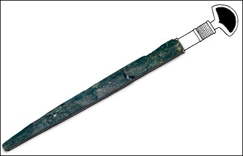

The Challenge -
Scabbard

Some ancient coverings for swords (scabbards) were made from leather and could be decorated by metal inlay. In Mesopotamia it is very rare for leather to survive. This scabbard, however, is made completely from metal. Metal was an expensive material, especially in Babylonia and so when weapons or tools were damaged or old they were often melted down for reuse. Metal objects are therefore exciting finds for any archaeologist digging in Mesopotamia.
|
|